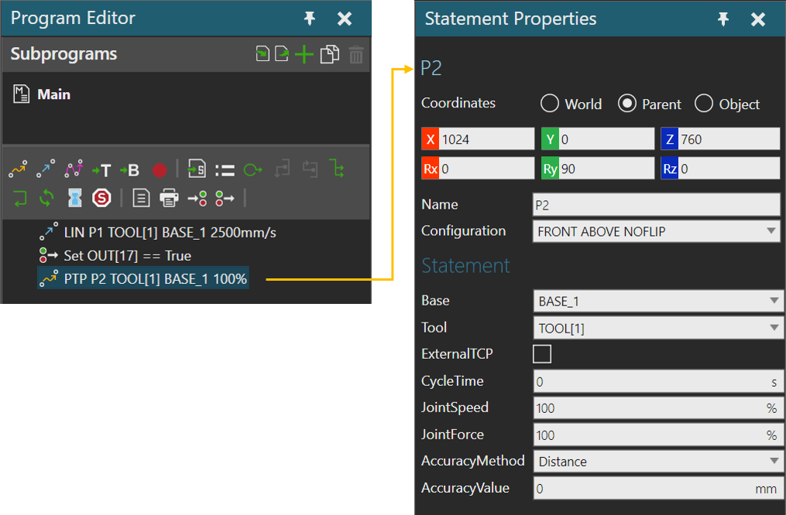
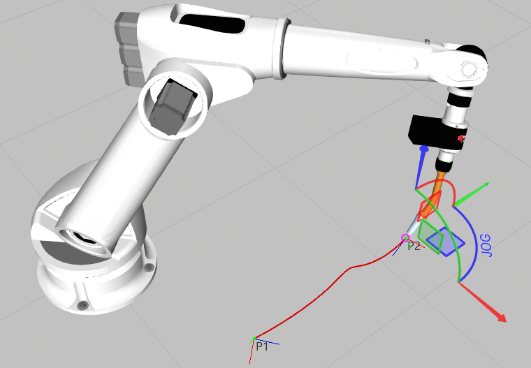

A Point-to-Point Motion statement is a motion in which a robot interpolates its joint values to reach a position.

Example. Point-to-point motion of robot from P1 to P2

| Name | Description |
| Position | Defines the position matrix using XYZ coordinates and Rx,Ry and Rz rotational values. |
| Name | Defines the name of position. |
| Configuration | Defines the configuration of the robot at position.
The configuration names are defined by the kinematics behavior of the robot and can be manufacturer specific. |
| Name | Description |
| Base | Defines the base frame used by robot for the statement. |
| Tool | Defines the tool frame used by robot for the statement. |
| ExternalTCP | Defines the interpolation mode for position.
False uses Base to Tool interpolation. True uses Tool to Base interpolation. |
| CycleTime | Defines the total elapsed time for motion, beginning to end.
A zero value means robot ignores cycle time. A value greater than zero means robot overrides speed settings to scale motion to cycle time. For example, a cycle time of 5 seconds means a motion that might otherwise take 2 seconds will now take 5 seconds. |
| JointSpeed | Defines the maximum speed for joints driven by robot controller as a percentage of nominal joint speed. |
| JointForce | Defines the percentage of joint acceleration and deceleration values to use in statement. |
| AccuracyMethod | Defines the zone of accuracy type to use for the position. |
| AccuracyValue | Defines the limit used in AccuracyMethod. |